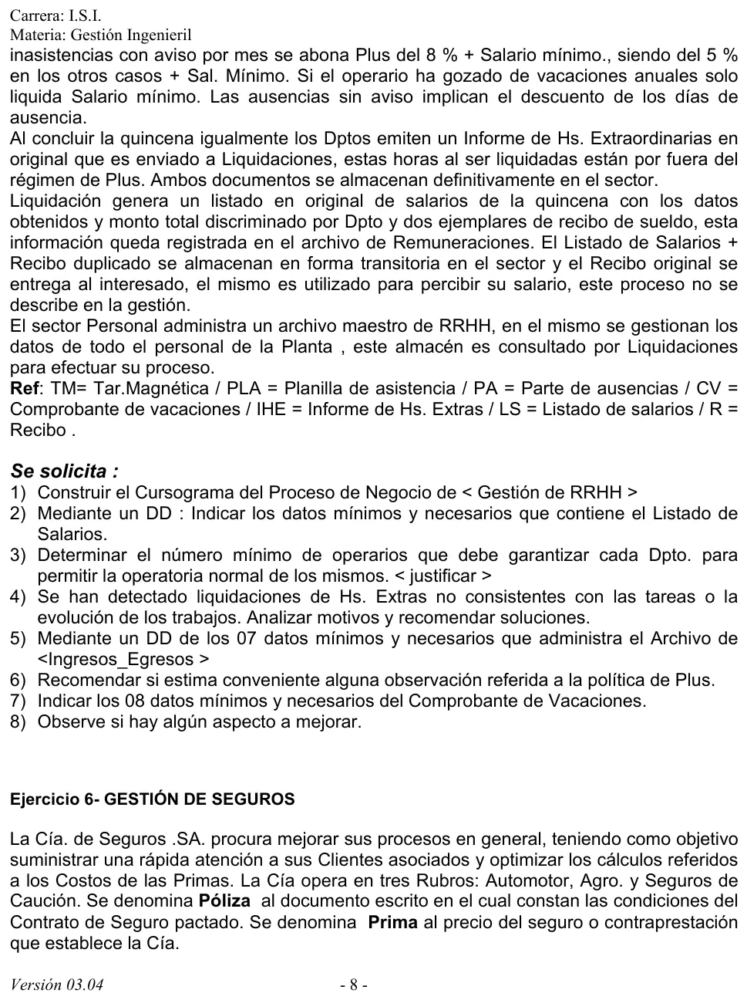

Práctica, ejercicio 5: gestión de RRHH
Práctica de la cátedra, 2017
Enunciado



Propuesta de respuesta
Respuesta no verificada. La propuso Luta Studios con inteligencia artificial y ningún docente la revisó. Puede tener errores.
1. Cursograma
Una columna por sector, con los símbolos del resumen de un alumno que usa la materia. La narrativa tiene varios circuitos con su propio comienzo. El registro de la tarjeta, la autorización semanal de horas extras, el parte diario de ausencias, el comprobante de vacaciones y el cierre de la quincena. Los archivos se repiten al costado en cada uso, para no cruzar líneas. El cobro con el recibo es un proceso no representado, porque la narrativa dice que no se describe. Tocá el dibujo para verlo en pantalla completa.
2. DD del listado de salarios
Listado_Salarios = nro_listado + fecha_emision + quincena
+ departamento(e) + monto_total_general
departamento(e) = cod_dpto + nombre_dpto + operario(e)
+ monto_total_dpto
operario(e) = nro_legajo + cuil + apellido_nombre
+ salario_minimo + plus + monto_horas_extras
+ descuento_ausencias + netodepartamento(e) se repite ocho veces, una por departamento, porque el listado discrimina el monto total por Dpto. operario(e) se repite por cada operario del departamento. El neto es el salario mínimo más el plus y las horas extras, menos el descuento por ausencias sin aviso.
3. Mínimo de operarios por departamento
Con menos de 30 presentes un departamento no puede operar. En los últimos 6 meses, la ausencia más grande fue de 6 operarios, y nunca hubo más.
| Ausentes | Frecuencia |
|---|---|
| 6 | 40 % |
| 4 | 35 % |
| 2 | 25 % |
Justificación. Con 36, aun el peor caso registrado deja 30 presentes. El promedio no alcanza.
Con operarios, el 40 % de las veces faltarían 6 y quedarían 29, por debajo del mínimo. Las vacaciones no están en el histórico de ausencias, así que cada departamento tiene que planificarlas para no bajar de 36 menos los ausentes del día.
4. Horas extras que no cierran con el trabajo
Motivos.
- El mismo departamento autoriza, registra e informa. Autoriza las horas, las carga en Hs_extras y emite el informe para Liquidaciones. Nadie de afuera controla.
- Ingreso no las registra. La narrativa lo dice. La tarjeta magnética marca la jornada, pero nadie cruza las horas extras con las horas reales en planta.
- La autorización es semanal y por operario, sin una tarea. No queda escrito para qué trabajo se autorizaron.
Soluciones propuestas.
- Que Liquidaciones cruce el informe de horas extras con Ingresos_Egresos antes de liquidar. Una hora extra sin permanencia en planta no se paga.
- Autorizar cada hora extra contra una tarea o una orden de trabajo, con la firma de un responsable distinto de quien la informa.
- Seguir la relación entre horas extras y producción del departamento. Si suben las horas y no sube lo producido, se revisa.
5. DD del archivo Ingresos_Egresos
Los siete datos.
Ingresos_Egresos = nro_legajo + fecha + hora + tipo_movimiento(d)
+ nro_tarjeta + cod_dpto + turno(d)
tipo_movimiento(d) = <ingreso | egreso>
turno(d) = <primero | segundo>Legajo, fecha y hora son los que nombra la narrativa. tipo_movimiento distingue la entrada de la salida, porque el registro se hace las dos veces. cod_dpto y turno permiten armar la planilla de asistencia por departamento.
6. Política de plus
| Situación en el mes | Liquida |
|---|---|
| Asistencia perfecta | Salario mínimo + plus del 10 % |
| Hasta 3 inasistencias con aviso | Salario mínimo + plus del 8 % |
| Otros casos | Salario mínimo + plus del 5 % |
| Gozó vacaciones anuales | Solo salario mínimo |
| Ausencias sin aviso | Se descuentan los días |
Observaciones.
- Las vacaciones castigan más que faltar sin aviso. Quien se tomó sus vacaciones pierde todo el plus, y quien faltó sin avisar cobra el 5 %, aunque se le descuenten los días.
- «Otros casos» premia cualquier asistencia. Con muchas faltas, con o sin aviso, igual se cobra un plus.
- El plus se mide por mes y se liquida por quincena. La narrativa no dice cómo se reparte.
Recomendación. Que una ausencia sin aviso haga perder el plus, que las vacaciones no cuenten como ausencia y que el plus se calcule sobre la misma quincena que se liquida.
7. Datos del comprobante de vacaciones
Los ocho datos.
Comprobante_Vacaciones = nro_CV + fecha_emision + nro_legajo
+ cuil + cod_dpto + antiguedad
+ dias_vacaciones + fecha_iniciodias_vacaciones sale de la antiguedad, como dice la narrativa. La fecha de inicio la fija cada departamento. La de vuelta se obtiene sumando los días, así que no hace falta guardarla.
8. Aspectos a mejorar
- Avisar las vacaciones con anticipación. Hoy se comunican en los primeros días del período, cuando ya empezó.
- Cerrar los archivos temporarios. El parte de ausencias en Personal, el listado y el duplicado del recibo nunca pasan a un archivo definitivo.
- Separar funciones en las horas extras, como en la consigna 4. Las normas de pagos del resumen de un alumno piden separar a quien controla la asistencia, quien liquida y quien paga.
- Corregir la política de plus, como en la consigna 6.
- Cuidar el mínimo de 36 operarios al asignar vacaciones y al suspender un turno.
Respuesta no verificada. Puede tener errores.
Se armó con las páginas del parcial, secciones Cursograma, Diccionario de datos, Fallas y mejoras y Normas específicas de pagos.
Quedó en duda: Los siete datos de Ingresos_Egresos y los ocho del comprobante de vacaciones se eligieron con lo que la narrativa nombra, más los que hacen falta para usarlos. Para el mínimo de operarios se tomó la ausencia más grande registrada. La narrativa no dice cómo se reparte entre quincenas un plus que se mide por mes, ni dónde se guardan los documentos de horas extras fuera de Liquidaciones. El cursograma y el DD salen de material de alumnos.